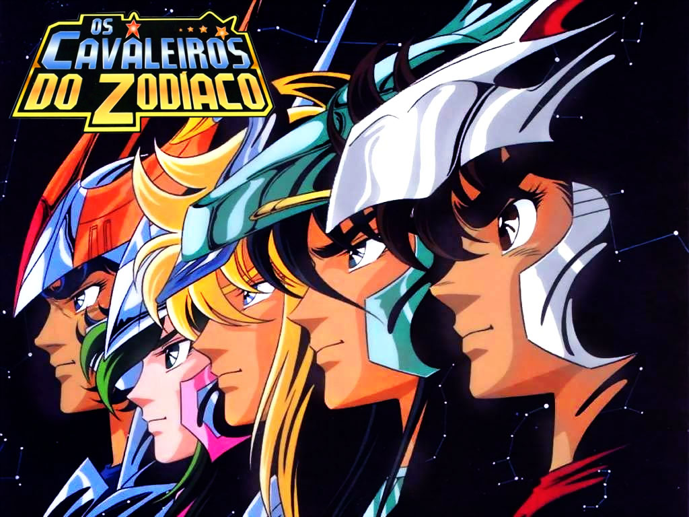

|  | Informações | Personagens | Animes | Filmes | Mangás | Histórias | Produtos |
Este site é destinado à todos que gostam da série Saint Seiya.Tudo começou no ano de 1986 quando o autor, Masami Kurumada, iniciou a série originalmente chamada Saint Seiya. A primeira aparição aconteceu no dia 26 de Novembro de 1985, em anúncio nas páginas da edição 52/85 da revista Weekly Shonen Jump (uma espécie de revista semanal publicada pela Shueisha). Mas foi na edição 01/86, publicada no dia 3 de Dezembro de 1985 que o primeiro capítulo foi publicado. Cada revista tinha aproximadamente 400 páginas, com diversas histórias (a maioria era em preto e branco) e os capítulos dos Cavaleiros do Zodíaco foram publicadas até o ano de 1990.
No Japão existem duas regras quando um mangá faz sucesso: lançar uma compilação completa (tankobon), com apenas a série em questão, e lançá-la em anime (desenho animado japonês). Saint Seiya rendeu 28 volumes tankobon com cerca de 200 páginas cada um. Com o passar do tempo novas recompilações foram sendo lançadas, chegando até uma edição de luxo para colecionadores (chamada de Kanzenban, com algumas páginas coloridas inclusive). O mangá foi dividido em sagas, de acordo com a história:
Deseja assistir o anime de alguma das Sagas? Abaixo temos as Sagas completas, confira agora mesmo!!!